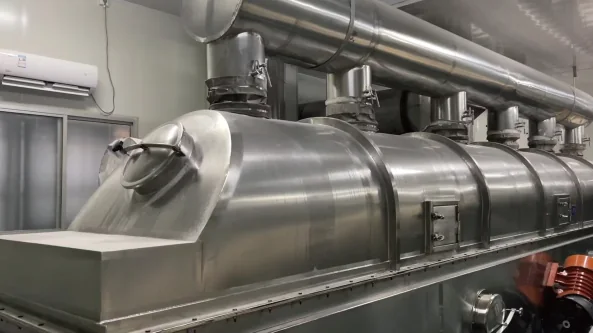
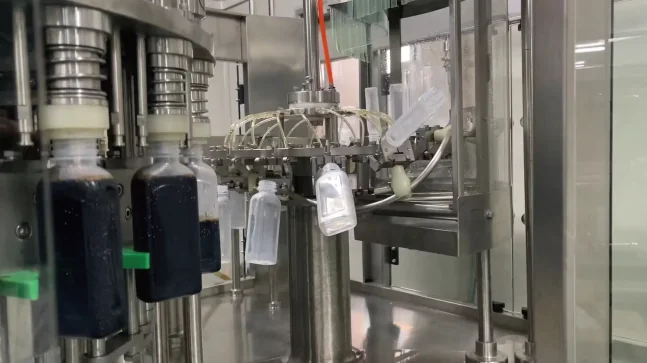
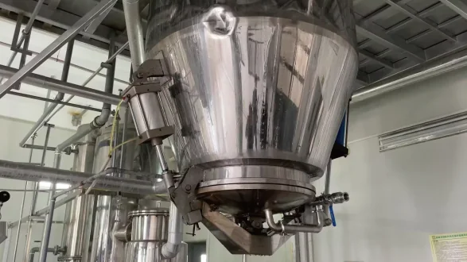
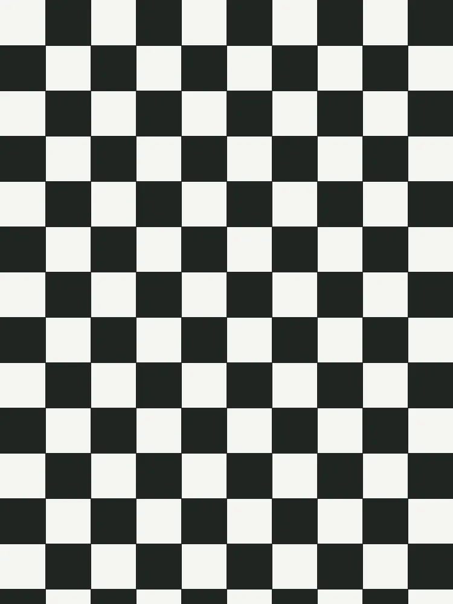
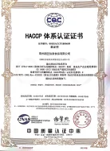
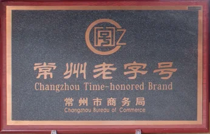
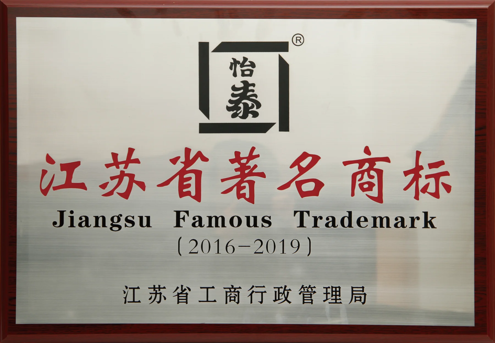
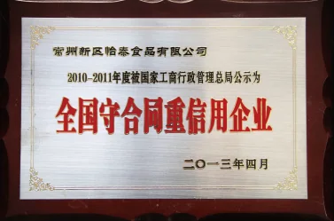

生产工艺
积累植物提取、真空浓缩、固体制粒和无菌灌装能力。
Quality Control, Qualifications & Honors
围绕植物提取、真空浓缩、固体制粒、无菌灌装、原料验收、过程检验、成品放行和生产现场管理建立品质体系，并以食品安全认证、生产许可和企业荣誉形成长期合作背书。

Professional Overview
积累植物提取、真空浓缩、固体制粒和无菌灌装能力。
通过理化、微生物和感官审评监控产品稳定性。
以体系认证、生产许可与企业荣誉支持专业客户长期合作。
Production Process
怡泰围绕乌梅、山楂、甘草、桂花等植物原料，形成从清洗分级、高效萃取、真空浓缩，到复配杀菌、无菌灌装或混合制粒的生产流程。




Quality Testing
公司建立设备齐全的理化实验室、微生物实验室和感官审评实验室，对多项指标进行监控，确保分析检验准确可靠。
检测产品关键理化指标，保障产品基础质量稳定。

监控微生物指标，保障食品安全。
关注口味、口感、香气和色泽稳定性，保障不同批次产品体验一致。
从原料到成品进行持续检测和验证。
Site Management
怡泰食品定期对一线员工进行 GMP、SSOP、HACCP 等食品安全生产培训和考核，确保员工操作标准化、规范化。
良好操作规范，保障生产过程有序可控。
卫生标准操作规范，保障现场卫生与操作标准。
危害分析与关键控制点，关注食品安全风险控制。
关注原料、包材、人员、设备与生产环境的稳定状态。
Qualifications & Honors
怡泰食品持续完善食品安全、质量管理、出口备案与生产许可相关体系建设。这些记录也代表企业在长期生产、稳定交付、食品安全和客户服务方面的持续积累。






2025 Labeling Update
R&M Trading LLC 已发布关于 2025 年 RM Refresher 产品召回的公开声明。该次召回与过敏原标签有关，目前已经终止；声明同时说明了后续增加的标签审核和产品放行复核措施。